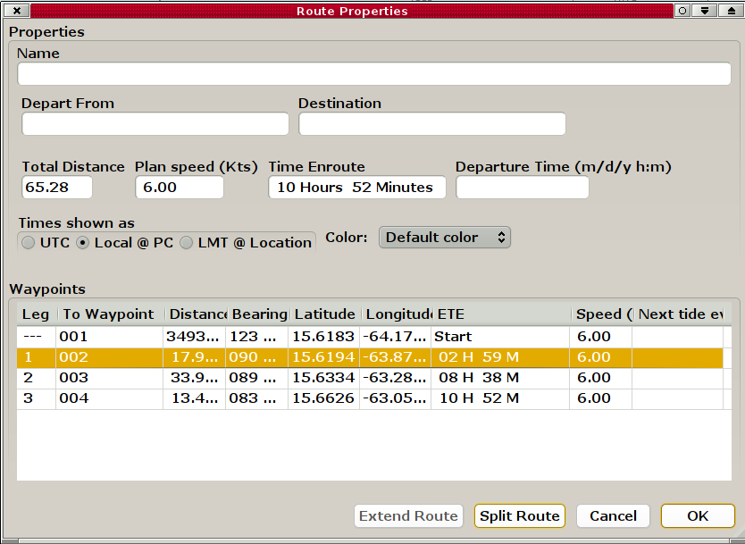

Verwendung von Routen
Einfügen existierender Wegpunkte in eine Route
Wie man splittet und erweitert - ein Beispiel.
Hm... eine etwas schlechte Planung. Eine kleine Insel mit einer südlichen flachen Bank ist auf unserer Route. Wir plazieren zwei Markierungen nördlich vom Hindernis und möchten das in unsere Route einbauen.

Der Wegpunkt westlich der Insel ist Nummer 2. Wir markieren ihn in den "Routen Eigenschaften" mit dem Rechts-Klick Menü. Der Button "Split Route" ist anwählbar und das wollen wir machen. Somit splitten wir die Route beim Wegpunkt #2.
Rechts-Klick auf Nummer 2 und "Append Waypoint" (Wegpunkt hinzufügen) wählen.
Den Cursor zum ersten Dreieck bewegen und "Yes" (Ja) antworten bei "Use nearby waypoint?" (Verwende nächsten Wegpunkt?). Dann den Cursor zum zweiten Dreieck bewegen und wieder "Yes" antworten. Das Gleiche nochmals beim Original Wegpunkt östlich von der Insel.
Klick auf "Activate Route" (Aktiviere Route) zur Prüfung, ob die Erweiterung funktioniert.
Nochmal "Route Properties" (Routen Eigenschaften) im Rechts-Klick Menü Dialog markieren. #3 ist der letzte Wegpunkt in unserer "neuen" temporären Route. Der Button "Extend Route" (Route erweitern) ist wählbar und das machen wir.
Mit Öffnen des Routen Managers sehen wir das Ergebnis. Man beachte die Namen der Routen. _B_plus ist aktiv. Es bleibt nun, die Route _B zu löschen und _B_plus auf einen passenden Namen umzubennen, z.B. in den Namen der ursprünglichen Route.
Löschen von Route _B.
Und hier ist schließlich die geänderte Route.
Das war nur ein Beispiel. Im wirklichen Leben wäre es einfacher, nur einen existierenden Wegpunkt zu verschieben, um die Insel zu vermeiden.